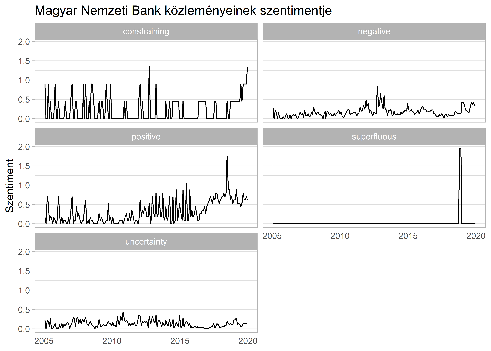

8 Szótáralapú elemzések, érzelem-elemzés
A szótár alapú szentiment elemzés egy egyszerű ötleten alapul. Hogyha tudjuk hogy egyes szavak milyen érzelmeket, érzéseket, információt hordoznak, akkor minél gyakoribb egy-egy érzelem kategóriához tartozó szó, akkor a szentiment annél inkább jellemző lesz a dokumentumra amit vizsgálunk. Természetesen itt is jó pár dolognak kell teljesülnie ahhoz hogy az elemzésünk eredménye megbízható legyen. Mivel a szótár alapú elemzés az adott szentiment kategórián belüli kulcsszavak gyakoriságán alapul, ezért van aki nem tekinti statisztikai elemzésnek (lásd például Young and Soroka (2012)). A tágabb kvantitatív szövegelemzési kontextusban az osztályozáson (classification) belül a felügyelt módszerekhez hasonlóan itt is ismert kategóriákkal dolgozunk (pl.: egy kulcsszó az “öröm” kategóriába tartozik), csak egyszerűbb módszertannal (Grimmer and Stewart 2013a).
A kulcsszavakra építés miatt a módszer a kvalitatív és kvantitatív kutatási vonalak találkozásának is tekinthető, hiszen egy-egy szónak az érzelmi töltete nem mindig ítélhető meg objektíven. Mint minden módszer esetében, amiről ebben a tankönyvben szó van, itt is kiemelten fontos hogy ellenőrízzük hogy a használt szótár kategóriák és kulcsszavak fedik-e a valóságot. Más szavakkal: validate, validate, validate. A módszer előnyei:
- Tökéletesen megbízható: nincsen probabilisztikus eleme a számításoknak, mint például a Support Vector alapú osztályozásnál, illetve az emberi szövegkódolásnál előforduló problémákat is elkerüljük így.
- Képesek vagyunk vele mérni a szöveg látens dimenzióit.
- Széles körben alkalmazható, egyszerűen számolható. A politikatudományon és számítogépes nyelvtudományokon belül nagyon sok kész szótár elérhető, amik különböző módszerekkel készültek és különböző területet fednek le (pl.: populizmus, pártprogramok policy tartalma, érzelmek, gazdasági tartalom.)6
- Relatíve könnyen adaptálható egyik nyelvi környezetből másikba.
A módszer lehetéges hátrányai:
- A szótár hatékonysága és validitása azon múlik hogy mennyire egyezik a szótár és a viszgálni kívánt dokumentum területe. Például jellemző hiba, hogy gazdasági bizonytalanságot szeretnék tőzsdei jelentések alapján vizsgálni a kutatók egy általános szentimet szótár használatával.
- A terület-specifikus szótár építése egy kvalitatív folyamat (lsd. a labjegyzetben), éppen ezért gyakran idő és emberi erőforrás igényes.
- A szózsák alapú elemzéseknél a kontextus elvész (ez gyakran igaz a bigram és trigramok használatánál is) a kulcsszavak esetében. Erre egy triviális példa a tagadás a mondatban: “nem vagyok boldog” esetén egy általános szentiment szótár a tagadás miatt félreosztályozná a mondat érzelmi töltését.
Az elemzés sikere több faktortól is függ. Fontos hogy a korpuszban lévő dokumentumokat körültekintően tisztítsuk meg az elemzés elején (lásd a 4. fejezetet a szövegelőkészítésről). A következő lépésben meg kell bizonyosodnunk arról, hogy a kiválasztott szentiment szótár alkalmazható a korpuszunkra. Amennyiben nem találunk alkalmas szótárat, akkor a saját szótár validálására kell figyelni. A negyedik fejezetben leírtak itt is érvényesek, érdemes a dokumentum-kifejezés mátrixot súlyozni valamilyen módon.
8.1 Szótárak az R-ben
A szótár alapú elemzéshez a quanteda csomagot fogjuk használni, illetve a 3. fejezetben már megismert readr, stringr, dplyr tidyverse csomagokat.7
library(readr)
library(stringr)
library(dplyr)
library(quanteda)Mielőtt a két esettanulmányt bemutatnánk, vizsgáljuk meg hogy hogyan néz ki egy szentiment szótár az R-ben. A szótárt kézzel úgy tudjuk létrehozni, hogy egy listán belül létrehozzuk karaktervektorként a kategóriákat és a kulcsszavakat és ezt a listát a quanteda dictionary függvényével eltároljuk.
szentiment_szotar <- dictionary(list(
pozitiv = c("jó", "boldog", "öröm"),
negativ = c("rossz", "szomorú", "lehangoló")
))
szentiment_szotar
#> Dictionary object with 2 key entries.
#> - [pozitiv]:
#> - jó, boldog, öröm
#> - [negativ]:
#> - rossz, szomorú, lehangolóA quanteda, quanteda.corpora és tidytext R csomagok több széles körben használt szentiment szótárat tartalmaznak, így nem kell kézzel replikálni minden egyes szótárat amit használni szeretnénk.
A szentiment elemzési munkafolyamat amit a részfejezetben bemutatunk a következő lépésekből áll:
- dokumentumok betöltése
- szöveg előkészítése
- a korpusz létrehozása
- dokumentum-kifejezés mátrix
- szótár betöltése
- a dokumentum-kifejezés mátrix szűrése a szótárban lévő kulcsszavakkal
- az eredmény vizualizálása, további felhasználása
A fejezetben két különböző korpuszt fogunk elemezni: a 2006-os Magyar Nemzet címlapjainak egy 252 cikkből álló mintájának szentimentjét vizsgáljuk egy magyar szentiment szótárral. A második korpusz a Magyar Nemzeti Bank angol nyelvű sajtóközleményeiből áll, amin bemutatjuk egy széles körben használt gazdasági szótár használatát.
8.2 Magyar Nemzet cikkek
mn_minta <- read_csv("data/magyar_nemzet_small.csv")
summary(mn_minta)
#> doc_id text doc_date
#> Min. : 1.0 Length:2834 Min. :2006-01-02
#> 1st Qu.: 709.2 Class :character 1st Qu.:2006-03-29
#> Median :1417.5 Mode :character Median :2006-06-28
#> Mean :1417.5 Mean :2006-06-28
#> 3rd Qu.:2125.8 3rd Qu.:2006-09-26
#> Max. :2834.0 Max. :2006-12-29A read_csv() segítségével beolvassuk a Magyar Nemzet adatbázis egy kisebb részét, ami az esetünkben a 2006-os cimlapokon szereplő hírek . A summary(), ahogy a neve is mutatja, egy gyors áttekinténtést nyújt a betöltött adatbázisról. Látjuk, hogy 2834 sorbol (megfigyelés) és 3 oszlopból (változó) áll. Az első ránézésre látszik hogy a text változónk tartalmazza a szövegeket, és hogy tisztításra szorulnak.
Az első szöveget megnézve látjuk, hogy a standard előkészítési lépések mellett a sortörést (\n) is ki kell törölnünk.
mn_minta$text[1]
#> [1] "Hat fovárosi képviselo öt percnél is kevesebbet beszélt egy év alatt a közgyulésben.\n\n\n\n\n\n\n\n\n\n\n"Habár a quanteda is lehetőséget ad néhány elékészítő lépésre, érdemes ezt olyan céleszközzel tenni ami nagyobb rugalmasságot ad a kezünkbe. Mi erre a célra a stringr csomagot használjuk. Első lépésben kitöröljük a sortöréseket (\n), a központozást, számokat, kisbetűsítünk minden szót. Előfordulhat hogy (számunkra nehezen látható) extra szóközök maradnak a szövegben. Ezeket az str_squish()-el tüntetjük el. A szöveg eleji és végi extra szóközöket (ún. leading vagy trailing white space) az str_trim() vágja le.
mn_tiszta <- mn_minta %>%
mutate(
text = str_remove_all(string = text, pattern = "\n"),
text = str_remove_all(string = text, pattern = "[:punct:]"),
text = str_remove_all(string = text, pattern = "[:digit:]"),
text = str_to_lower(text),
text = str_trim(text),
text = str_squish(text)
)A szöveg sokkal jobban néz ki, habár észrevehetjük hogy maradhattak benne problémás részek, főleg a sortörés miatt, ami sajnos hol egyes szavak közepén van (a jobbik eset), vagy pedig pont szóhatáron, ez esetben a két szó sajnos összevonódik. Az egyszerűség kedvéért feltételezzük hogy ez kellően ritkán fordul elő ahhoz hogy ne befolyásolja az elemzésünk eredményét.
mn_tiszta$text[1]
#> [1] "hat fovárosi képviselo öt percnél is kevesebbet beszélt egy év alatt a közgyulésben"Miután kész a tiszta(bb) szövegünk, kreálunk egy korpuszt a quanteda corpus() fuggvenyevel. A létrehozott corpus objektum a szöveg mellett egyéb dokumentum meta adatokat is tud tárolni (dátum, író, hely, stb.) Ezeket mi is hozzáadhatjuk (erre majd látunk példát nemsokára) illetve amikor létrehozzuk a korpuszt a data frame-ünkből, akkor autómatikusan meta adatokként tárolódnak az változóink. Jelen esetben az egyetlen dokument változónk az a dátum lesz a szöveg mellett. A korpusz dokumentum változóihoz a docvars() segíségével tudunk hozzáférni.
mn_corpus <- corpus(mn_tiszta)
head(docvars(mn_corpus), 5)
#> doc_date
#> 1 2006-01-02
#> 2 2006-01-02
#> 3 2006-01-02
#> 4 2006-01-02
#> 5 2006-01-02A következő lépés a dokument-kifejezés mátrix létrehozása a dfm() függvénnyel (ami a document-feature matrix rövidítése). Előszőr tokenekre bontjuk a szövegeket a tokens()-el, és aztán ezt a tokenizált szózsákot kapja meg a dfm inputnak. A sornak a végén a létrehozott mátrixunkat TF-IDF módszerrel súlyozzuk a dfm_tfidf() használatával.
mn_dfm <- mn_corpus %>%
tokens(what = "word") %>%
dfm() %>%
dfm_tfidf()A cikkek szentimentjét egy magyar szótárral fogjuk becsülni, amit a Társadalomtudmányi Kutatóközpont CSS-RECENS és a POLTEXTLab kutatói készítették.8 Két dimenziót tarlamaz (pozitív és negatív), 2299 pozitív és 2588 negatív kulcsszóval. Ez nem számít kirívóan nagynak a szótárak között, mivel az adott kategóriák minél teljesebb lefedése a cél. Azt is látjuk, hogy a kulcsszavak egyszavas tokenek (szóval nem érdemes bigramokat és trigramokat készítenünk a tokenizálás során), illetve nem szótövek (így szótöveznünk sem kell).
poltext_szotar
#> Dictionary object with 2 key entries.
#> - [positive]:
#> - abszolút, ad, adaptív, adekvát, adócsökkentés, adókedvezmény, adomány, adományoz, adóreform, adottság, adottságú, áfacsökkentés, agilis, agytröszt, áhított, ajándék, ajándékoz, ajánl, ajánlott, akadálytalan [ ... and 2,279 more ]
#> - [negative]:
#> - aberrált, abnormális, abnormalitás, abszurd, abszurditás, ádáz, adócsalás, adócsaló, adós, adósság, áfacsalás, áfacsaló, affér, aggasztó, aggodalom, aggódik, aggódás, agresszió, agresszíven, agresszivitás [ ... and 2,568 more ]Az egyes dokumentumok szentimentjét a dfm_lookup() becsüli, ahol az előző lépésben létrehozott súlyozott dfm az input és a magyar szentimentszótár a dictionary. Egy gyors pillantás az eredményre és látjuk hogy minden dokumentumhoz készült egy pozitív és egy negatív értéket. A TF-IDF súlyozás miatt nem látunk egész számokat (a súlyozás nélkül a sima szófrekvenciát kapnánk).
mn_szentiment <- dfm_lookup(mn_dfm, dictionary = poltext_szotar)
head(mn_szentiment, 5)
#> Document-feature matrix of: 5 documents, 2 features (40.0% sparse) and 1 docvar.
#> features
#> docs positive negative
#> 1 0 0
#> 2 0.8375026 12.497973
#> 3 0 0
#> 4 21.1044299 6.449036
#> 5 11.0358129 8.131890Ahhoz hogy fel tudjuk használni a kapott eredményt, érdemes dokumentumváltozóként eltárolni a korpuszban. Ezt a fent már használt docvars() segítségével tudjuk megtenni, ahol a második argumentumkét az új változó nevét adjuk meg stringként.
docvars(mn_corpus, "pos") <- as.numeric(mn_szentiment[, 1])
docvars(mn_corpus, "neg") <- as.numeric(mn_szentiment[, 2])
head(docvars(mn_corpus), 5)
#> doc_date pos neg
#> 1 2006-01-02 0.0000000 0.000000
#> 2 2006-01-02 0.8375026 12.497973
#> 3 2006-01-02 0.0000000 0.000000
#> 4 2006-01-02 21.1044299 6.449036
#> 5 2006-01-02 11.0358129 8.131890Végül a kapott korpuszt a kiszámolt szentiment értékekkel a quanteda-ban lévő convert() fügvénnyel data frame-é alakítjuk. A convert függvény dokumentációját érdemes elolvasni, mert ennek segítségével tudjuk a quanteda-ban elkeszült objektumainkat átalakítani úgy, hogy azt más csomagok is tudják használni.
mn_df <- convert(mn_corpus, to = "data.frame")
summary(mn_df)
#> doc_id text doc_date pos
#> Length:2834 Length:2834 Min. :2006-01-02 Min. : 0.000
#> Class :character Class :character 1st Qu.:2006-03-29 1st Qu.: 0.000
#> Mode :character Mode :character Median :2006-06-28 Median : 2.373
#> Mean :2006-06-28 Mean : 4.074
#> 3rd Qu.:2006-09-26 3rd Qu.: 6.280
#> Max. :2006-12-29 Max. :35.648
#> neg
#> Min. : 0.000
#> 1st Qu.: 0.000
#> Median : 2.037
#> Mean : 3.528
#> 3rd Qu.: 5.348
#> Max. :39.096Mielőtt vizualizálnánk az eredményt érdemes a napi szintre aggregálni a szentimentet és egy nettó értéket kalkulálni.9
mn_df <- mn_df %>%
group_by(doc_date) %>%
summarise(
daily_pos = sum(pos),
daily_neg = sum(neg),
net_daily = daily_pos - daily_neg
)A plot alapján egyértelmű trendet nem lehet megállapítani és még a 2006-os év végi turbulens belpolitikai események sem feltétlenül jelennek meg markánsan. Ennek az oka abban is kereshető, hogy egy napilap címlapját ritkán dominálja teljes egészében a belpolitika és így a negatív és pozitív szentimentek kioltják egymást. Természetesen messzemenő következtetéseket egy ábra alapján nem érdemes levonni, de az elemzésünk azt mutatha hogy a nyári hónapok alatt kevesebb volt az igazán negatív címlap, ellenben az év eleje és vége tartalmazta a minta alsó szélső értékeit.
library(ggplot2)ggplot(mn_df, aes(doc_date, net_daily)) +
geom_line() +
labs(
title = "Magyar Nemzet címlap szentimentje",
subtitle = "A szentiment érték a pozitív és negatív szentiment pontszámok különbsége a teljes mintára.",
y = "Szentiment",
x = NULL,
caption = "Adatforrás: https://cap.tk.hu/"
)
8.3 MNB sajtóközlemények
A második esettanulmányban a kotextuális szótár elemzést mutatjuk be egy angol nyelvű korpusz és specializált szótár segítségével. A korpusz az MNB kamatdöntéseit kísérő nemzetközi sajtóközleményei és a szótár pedig a Loughran and McDonald (2011) pénzügyi szentimentszótár.10 A szótár a quanteda.dictionaries csomag részeként elérhető, illetve a tankönyv honlapján is megtalálható.
penzugy_szentiment
#> Dictionary object with 9 key entries.
#> - [NEGATIVE]:
#> - abandon, abandoned, abandoning, abandonment, abandonments, abandons, abdicated, abdicates, abdicating, abdication, abdications, aberrant, aberration, aberrational, aberrations, abetting, abnormal, abnormalities, abnormality, abnormally [ ... and 2,335 more ]
#> - [POSITIVE]:
#> - able, abundance, abundant, acclaimed, accomplish, accomplished, accomplishes, accomplishing, accomplishment, accomplishments, achieve, achieved, achievement, achievements, achieves, achieving, adequately, advancement, advancements, advances [ ... and 334 more ]
#> - [UNCERTAINTY]:
#> - abeyance, abeyances, almost, alteration, alterations, ambiguities, ambiguity, ambiguous, anomalies, anomalous, anomalously, anomaly, anticipate, anticipated, anticipates, anticipating, anticipation, anticipations, apparent, apparently [ ... and 277 more ]
#> - [LITIGIOUS]:
#> - abovementioned, abrogate, abrogated, abrogates, abrogating, abrogation, abrogations, absolve, absolved, absolves, absolving, accession, accessions, acquirees, acquirors, acquit, acquits, acquittal, acquittals, acquittance [ ... and 883 more ]
#> - [CONSTRAINING]:
#> - abide, abiding, bound, bounded, commit, commitment, commitments, commits, committed, committing, compel, compelled, compelling, compels, comply, compulsion, compulsory, confine, confined, confinement [ ... and 164 more ]
#> - [SUPERFLUOUS]:
#> - aegis, amorphous, anticipatory, appertaining, assimilate, assimilating, assimilation, bifurcated, bifurcation, cessions, cognizable, concomitant, correlative, deconsolidation, delineation, demonstrable, demonstrably, derecognized, derecognizes, derivatively [ ... and 36 more ]
#> [ reached max_nkey ... 3 more keys ]A szentiment szótár 9 kategóriából áll. A legtöbb kulcsszó a negatív dimenzióhoz van (2355).
A munkamenet hasonló a Magyar Nemzetes példához:
- adat betöltés
- szövegtisztítás
- korpusz
- tokenek
- kulcs kontextuális tokenek szűrése
- dfm előállítás és szentiment számítás
- az eredmény vizualizálása, további felhasználása
mnb_pr <- read_csv("data/mnb_pr_corpus.csv")
summary(mnb_pr)
#> date text id year
#> Min. :2005-01-24 Length:180 Min. : 1.00 Min. :2005
#> 1st Qu.:2008-10-14 Class :character 1st Qu.: 45.75 1st Qu.:2008
#> Median :2012-07-10 Mode :character Median : 90.50 Median :2012
#> Mean :2012-07-08 Mean : 90.50 Mean :2012
#> 3rd Qu.:2016-03-30 3rd Qu.:135.25 3rd Qu.:2016
#> Max. :2019-12-17 Max. :180.00 Max. :2019Az adatbázisunk 180 megfigyelésből és 4 változóbol áll. Az egyetlen lényeges dokumentum meta adat itt is a szövegek megjelenési ideje.
A szövegeket ugyanazokkal a standard eszközökkel kezeljük mint a Magyar Nemzet esetében. Érdemes minden esetben ellenőrízni, hogy az R kód amit használunk az tényleg azt csinálja-e mint amit szeretnénk hogy csináljon. Ez hatványozottan igaz abban az esetben, amikor szövegekkel és regular expressionökkel dolgozunk.
mnb_tiszta <- mnb_pr %>%
mutate(
text = str_remove_all(string = text, pattern = "[:cntrl:]"),
text = str_remove_all(string = text, pattern = "[:punct:]"),
text = str_remove_all(string = text, pattern = "[:digit:]"),
text = str_to_lower(text),
text = str_trim(text),
text = str_squish(text)
)Miután rendelkezésre állnak a tiszta dokumentumaink, egy karaktervektorba gyüjtjuk azokat a kulcsszavakat amelyek környékén szeretnénk megfigyelni a szentiment alakulását. A példa kedvéért mi az unemp*, growth, gdp, inflation* szótöveket és szavakat választottuk. A tokens_keep() megtartja a kulcsszavainkat és egy általunk megadott +/- n tokenes környezetüket (jelen esetben 10). A szentiment elemzést pedig már ezen a jóval kisebb mátrixon fogjuk lefuttatni. A phrase() segítségével több szóból álló kifejezéséket is vizsgálhatunk. Ilyen szókapcsolat például az Európai Unió is, ahol lényeges hogy egyben kezeljük a két szót.
mnb_corpus <- corpus(mnb_tiszta)
gazdasag <- c("unemp*", "growth", "gdp", "inflation*", "inflation expectation*")
mnb_token <- tokens(mnb_corpus) %>%
tokens_keep(pattern = phrase(gazdasag), window = 10)A szentimentet most is egy súlyozott dfm-ből számoljuk. A kész eredményt hozzáadjuk a korpuszhoz majd data framet hozunk létre belőle. A 9 kategóriából 5-öt adunk választunk csak ki, amelyeknek jegybanki környezetben értelmezhető tartalma van.
mnb_szentiment <- tokens_lookup(mnb_token, dictionary = penzugy_szentiment) %>%
dfm() %>%
dfm_tfidf()
docvars(mnb_corpus, "negative") <- as.numeric(mnb_szentiment[, "negative"])
docvars(mnb_corpus, "positive") <- as.numeric(mnb_szentiment[, "positive"])
docvars(mnb_corpus, "uncertainty") <- as.numeric(mnb_szentiment[, "uncertainty"])
docvars(mnb_corpus, "constraining") <- as.numeric(mnb_szentiment[, "constraining"])
docvars(mnb_corpus, "superfluous") <- as.numeric(mnb_szentiment[, "superfluous"])
mnb_df <- convert(mnb_corpus, to = "data.frame")A célunk hogy szentiment kategóriánkénti bontásban mutassuk be az elemzésünk eredményét, de előtte egy kicsit alakítani kell a data frame-n, hogy a második fejezetben is tárgyalt tidy formára hozzuk. A különböző szentiment értékeket tartalmazó oszlopokat fogjuk átrendezni úgy hogy kreálunk egy “sent_type” változót ahol a kategória nevet fogjuk eltárolni és egy “sent_score” változót, ahol a szentiment értéket. Ehhez a tidyr-ben található pivot_longer() -t használjuk.
mnb_df <- mnb_df %>%
pivot_longer(
cols = negative:superfluous,
names_to = "sent_type",
values_to = "sent_score"
)Az átalakítás után már könnyedén tudjuk kategóriákra bontva megjeleníteni az MNB közlemények különböző látens dimenzióit. Fontos emlékezni arra, hogy ez az eredmény a kulcsszavaink +/- 10 tokenes környezetében lévő szavak szentimentjét mérik. Ami érdekes eredmény, hogy a felesleges “töltelék” szövegek (superflous kategória) szinte soha nem fordulnak elő a kulcsszavaink körül. A többi érték is nagyjából megfelel a várakozásainknak, habár a 2008-as gazdasági válság nem tűnik kiugró pontnak. Azonban a 2010 utáni európai válság már láthatóan megjelnik az idősorainkban.
A szótár amit használtunk az alapvetően az Egyesült Államokban a tőzsdén kereskedett cégek publikus beszámolóiból készült így elképzelhető, hogy egyes jegybanki környezetben sokat használt kifejezés nincs benne. A validálása a kapott eredményeknek ezért is nagyon fontos, illetve érdemes azzal is tisztában lenni hogy a szótáras módszer nem tökéletes (ahogy az emberi vagy más gépi kódolás sem).
ggplot(mnb_df, aes(date, sent_score)) +
geom_line() +
labs(
title = "Magyar Nemzeti Bank közleményeinek szentimentje",
y = "Szentiment",
x = NULL
) +
facet_wrap(~sent_type, ncol = 2)
A lehetséges, területspecifikus szótáralkotási módszerekről részletesebben ezekben a cikkekben lehet olvasni: Laver and Garry (2000); Young and Soroka (2012); Loughran and McDonald (2011); Máté, Sebők, and Barczikay (2021)↩︎
A szentiment elemzéshez gyakran használt csomag még a tidytext. Az online is szabadon elérhető Silge and Robinson (2017) 2. fejezetében részletesen is bemutatják a szerzők a tidytext munkafolyamatot (https://www.tidytextmining.com/sentiment.html).↩︎
A szótár elérhető a könyv online verziójának a GitHub repozitorijából. (LINK)↩︎
A csoportosított adatokkal való munka bővebb bemutatását lsd. a Függelékben↩︎
A témával részletesebben is foglalkoztunk a Máté, Sebők, and Barczikay (2021) tanulmányban, ahol egy saját monetáris szentiment szótárt mutatunk be. Az implementáció és a hozzá tartozó R forráskód a nyilvános https://doi.org/10.6084/m9.figshare.13526156.v1 linken.↩︎